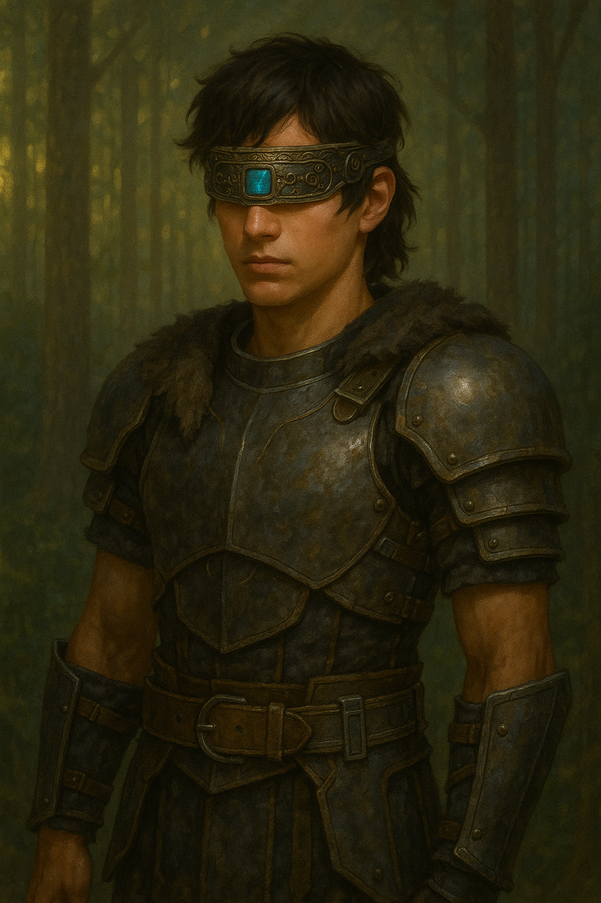

Appearance
- Tall, muscular; angular features; disciplined presence.
- Tan skin; short tactical brown hair.
- Eyes once deep blue; now concealed by the visor (Ember Crown).
Korranthisian from a high-gravity world; bearer of the Authority’s archive; symbol of resistance.

Hearing, smell, and touch sharpen to map space—footstep vibrations, air currents, and scent become data.
Renders nearby forms as faint, spatially accurate silhouettes—enough to move and fight with confidence.
Detects presences like the Aetherion’s holographic AI (Aethra), giving “shape” to what others only see as light.
Combines shadow-sense with memory, sound, and touch to build precise mental maps after a single pass.
In danger, reacts to breath, motion, and pressure—timing that borders on prescient.
Reads printed ink by texture; ship systems translate data via audio/haptics or projections perceptible via shadow-sense.